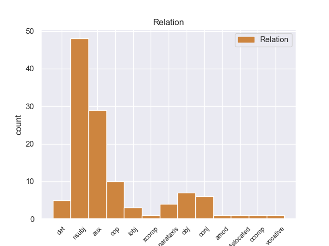
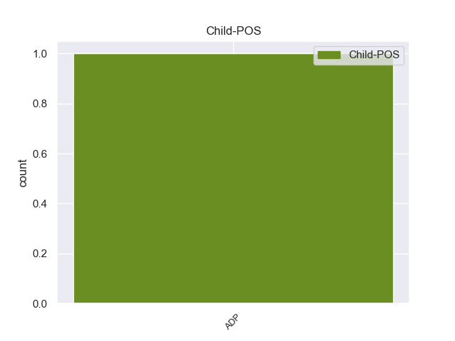

Distribution of features within this leaf



Agreement Rules sorted by frequency.
- When the dependent token is the nominal subject(nsubj) of the head token, and the head token is AUX and the dependent token is PRON.
1 आज _ _ _ _ 0 _ _ _
2 मी मी PRON _ Case=Nom|Number=Sing|Person=1 11 nsubj _ _
3 तुला _ _ _ _ 0 _ _ _
4 तू _ _ _ _ 0 _ _ _
5 मागशील _ _ _ _ 0 _ _ _
6 ती _ _ _ _ 0 _ _ _
7 किंमत _ _ _ _ 0 _ _ _
8 द्यायला _ _ _ _ 0 _ _ _
9 तयार _ _ _ _ 0 _ _ _
10 झालो _ _ _ _ 0 _ _ _
11 होतो असणे AUX _ Gender=Masc|Number=Sing|Person=1|Tense=Past|VerbForm=Fin 0 _ _ _
12 ; _ _ _ _ 0 _ _ _
13 परंतु _ _ _ _ 0 _ _ _
14 None _ _ _ _ 0 _ _ _
15 None _ _ _ _ 0 _ _ _
16 बुद्धी _ _ _ _ 0 _ _ _
17 भ्रष्ट _ _ _ _ 0 _ _ _
18 झाली _ _ _ _ 0 _ _ _
19 आहे _ _ _ _ 0 _ _ _
20 . _ _ _ _ 0 _ _ _
1 None _ _ _ _ 0 _ _ _
2 None _ _ _ _ 0 _ _ _
3 दोन _ _ _ _ 0 _ _ _
4 - _ _ _ _ 0 _ _ _
5 चार _ _ _ _ 0 _ _ _
6 कलमे _ _ _ _ 0 _ _ _
7 लावली लावणे VERB _ Aspect=Perf|Gender=Neut|Number=Plur|Person=3|VerbForm=Fin 8 aux _ _
8 होती असणे AUX _ Gender=Neut|Number=Plur|Person=3|Tense=Past|VerbForm=Fin 0 _ _ _
9 . _ _ _ _ 0 _ _ _
1 आज _ _ _ _ 0 _ _ _
2 मी _ _ _ _ 0 _ _ _
3 तुला _ _ _ _ 0 _ _ _
4 तू _ _ _ _ 0 _ _ _
5 मागशील _ _ _ _ 0 _ _ _
6 ती _ _ _ _ 0 _ _ _
7 किंमत _ _ _ _ 0 _ _ _
8 द्यायला _ _ _ _ 0 _ _ _
9 तयार _ _ _ _ 0 _ _ _
10 झालो _ _ _ _ 0 _ _ _
11 होतो _ _ _ _ 0 _ _ _
12 ; _ _ _ _ 0 _ _ _
13 परंतु _ _ _ _ 0 _ _ _
14 None _ _ _ _ 0 _ _ _
15 None _ _ _ _ 0 _ _ _
16 बुद्धी _ _ _ _ 0 _ _ _
17 भ्रष्ट _ _ _ _ 0 _ _ _
18 झाली होणे AUX _ Aspect=Perf|Gender=Fem|Number=Sing|Person=3|VerbForm=Fin 0 _ _ _
19 आहे असणे AUX _ Number=Sing|Person=3|Tense=Pres|VerbForm=Fin 18 aux _ SpaceAfter=No
20 . _ _ _ _ 0 _ _ _
1 None _ _ _ _ 0 _ _ _
2 None _ _ _ _ 0 _ _ _
3 None _ _ _ _ 0 _ _ _
4 None _ _ _ _ 0 _ _ _
5 काठी _ _ _ _ 0 _ _ _
6 भीमा भीमा PROPN _ Case=Nom|Gender=Masc|Number=Sing 8 nsubj _ _
7 बसला _ _ _ _ 0 _ _ _
8 होता असणे AUX _ Gender=Masc|Number=Sing|Person=3|Tense=Past|VerbForm=Fin 0 _ _ _
9 . _ _ _ _ 0 _ _ _
1 तो _ _ _ _ 0 _ _ _
2 एक एक DET _ Number=Sing|PronType=Ind 4 det _ _
3 खेळ _ _ _ _ 0 _ _ _
4 आहे असणे AUX _ Number=Sing|Person=3|Tense=Pres|VerbForm=Fin 0 _ _ _
5 . _ _ _ _ 0 _ _ _
1 तिला _ _ _ _ 0 _ _ _
2 बहुतेक _ _ _ _ 0 _ _ _
3 माहित _ _ _ _ 0 _ _ _
4 आहे _ _ _ _ 0 _ _ _
5 , _ _ _ _ 0 _ _ _
6 तो _ _ _ _ 0 _ _ _
7 कुठे _ _ _ _ 0 _ _ _
8 आहे _ _ _ _ 0 _ _ _
9 , _ _ _ _ 0 _ _ _
10 पण _ _ _ _ 0 _ _ _
11 तिला _ _ _ _ 0 _ _ _
12 हे हा PRON _ Case=Acc|Distance=Prox|Gender=Neut|Number=Sing|Person=3 14 obj _ _
13 सांगायचे _ _ _ _ 0 _ _ _
14 नाही नाही AUX _ Number=Sing|Person=3|Polarity=Neg|VerbForm=Fin 0 _ _ _
15 आहे _ _ _ _ 0 _ _ _
16 . _ _ _ _ 0 _ _ _
1 हवामान _ _ _ _ 0 _ _ _
2 आज _ _ _ _ 0 _ _ _
3 चांगले चांगला ADJ _ Case=Nom|Gender=Neut|Number=Sing 4 cop _ _
4 आहे असणे AUX _ Number=Sing|Person=3|Tense=Pres|VerbForm=Fin 0 _ _ _
5 , _ _ _ _ 0 _ _ _
6 खूप _ _ _ _ 0 _ _ _
7 गरम _ _ _ _ 0 _ _ _
8 आहे _ _ _ _ 0 _ _ _
9 . _ _ _ _ 0 _ _ _
1 मी _ _ _ _ 0 _ _ _
2 म्हणून _ _ _ _ 0 _ _ _
3 तुला तू PRON _ Case=Dat|Number=Sing|Person=2 7 iobj _ _
4 इतकी _ _ _ _ 0 _ _ _
5 किंमत _ _ _ _ 0 _ _ _
6 देत _ _ _ _ 0 _ _ _
7 आहे असणे AUX _ Number=Sing|Person=3|Tense=Pres|VerbForm=Fin 0 _ _ _
8 . _ _ _ _ 0 _ _ _
1 तिला _ _ _ _ 0 _ _ _
2 बहुतेक _ _ _ _ 0 _ _ _
3 माहित _ _ _ _ 0 _ _ _
4 आहे असणे AUX _ Number=Sing|Person=3|Tense=Pres|VerbForm=Fin 0 _ _ _
5 , _ _ _ _ 0 _ _ _
6 तो _ _ _ _ 0 _ _ _
7 कुठे _ _ _ _ 0 _ _ _
8 आहे _ _ _ _ 0 _ _ _
9 , _ _ _ _ 0 _ _ _
10 पण _ _ _ _ 0 _ _ _
11 तिला _ _ _ _ 0 _ _ _
12 हे _ _ _ _ 0 _ _ _
13 सांगायचे _ _ _ _ 0 _ _ _
14 नाही नाही AUX _ Number=Sing|Person=3|Polarity=Neg|VerbForm=Fin 4 conj _ _
15 आहे _ _ _ _ 0 _ _ _
16 . _ _ _ _ 0 _ _ _
1 तो _ _ _ _ 0 _ _ _
2 पक्षी _ _ _ _ 0 _ _ _
3 किंवा _ _ _ _ 0 _ _ _
4 प्राणी _ _ _ _ 0 _ _ _
5 नाही नाही AUX _ Number=Sing|Person=3|Polarity=Neg|VerbForm=Fin 0 _ _ _
6 आहे असणे AUX _ Number=Sing|Person=3|Tense=Pres|VerbForm=Fin 5 cop _ SpaceAfter=No
7 . _ _ _ _ 0 _ _ _
1 ठीक _ _ _ _ 0 _ _ _
2 आहे असणे AUX _ Number=Sing|Person=3|Tense=Pres|VerbForm=Fin 0 _ _ _
3 , _ _ _ _ 0 _ _ _
4 राजा _ _ _ _ 0 _ _ _
5 म्हणाला म्हणणे VERB _ Aspect=Perf|Gender=Masc|Number=Sing|Person=3|VerbForm=Fin 2 parataxis _ SpaceAfter=No
6 . _ _ _ _ 0 _ _ _
1 मेरी _ _ _ _ 0 _ _ _
2 बसली बसणे VERB _ Aspect=Perf|Gender=Fem|Number=Sing|Person=3|VerbForm=Fin 3 cop _ _
3 आहे असणे AUX _ Number=Sing|Person=3|Tense=Pres|VerbForm=Fin 0 _ _ _
4 , _ _ _ _ 0 _ _ _
5 आणि _ _ _ _ 0 _ _ _
6 None _ _ _ _ 0 _ _ _
7 None _ _ _ _ 0 _ _ _
8 हात _ _ _ _ 0 _ _ _
9 None _ _ _ _ 0 _ _ _
10 None _ _ _ _ 0 _ _ _
11 None _ _ _ _ 0 _ _ _
12 None _ _ _ _ 0 _ _ _
13 आहेत _ _ _ _ 0 _ _ _
14 . _ _ _ _ 0 _ _ _
1 ती _ _ _ _ 0 _ _ _
2 छोटी _ _ _ _ 0 _ _ _
3 मुलगी _ _ _ _ 0 _ _ _
4 None _ _ _ _ 0 _ _ _
5 None _ _ _ _ 0 _ _ _
6 बहीण _ _ _ _ 0 _ _ _
7 आहे असणे AUX _ Number=Sing|Person=3|Tense=Pres|VerbForm=Fin 0 _ _ _
8 , _ _ _ _ 0 _ _ _
9 ती _ _ _ _ 0 _ _ _
10 पाच _ _ _ _ 0 _ _ _
11 None _ _ _ _ 0 _ _ _
12 _ चा ADP _ Gender=Fem|Number=Sing 7 conj _ _
13 आहे _ _ _ _ 0 _ _ _
14 . _ _ _ _ 0 _ _ _
1 नाही _ _ _ _ 0 _ _ _
2 , _ _ _ _ 0 _ _ _
3 None _ _ _ _ 0 _ _ _
4 None _ _ _ _ 0 _ _ _
5 कुत्रा _ _ _ _ 0 _ _ _
6 नाही _ _ _ _ 0 _ _ _
7 आहे असणे AUX _ Number=Sing|Person=3|Tense=Pres|VerbForm=Fin 0 _ _ _
8 , _ _ _ _ 0 _ _ _
9 None _ _ _ _ 0 _ _ _
10 None _ _ _ _ 0 _ _ _
11 None _ _ _ _ 0 _ _ _
12 मांजर _ _ _ _ 0 _ _ _
13 आहे असणे AUX _ Number=Sing|Person=3|Tense=Pres|VerbForm=Fin 7 parataxis _ SpaceAfter=No
14 . _ _ _ _ 0 _ _ _
1 ती _ _ _ _ 0 _ _ _
2 सगळीकडे _ _ _ _ 0 _ _ _
3 शोधते _ _ _ _ 0 _ _ _
4 पण _ _ _ _ 0 _ _ _
5 तिला _ _ _ _ 0 _ _ _
6 जेम्स जेम्स PROPN _ Case=Acc|Gender=Masc|Number=Sing 8 obj _ _
7 सापडत _ _ _ _ 0 _ _ _
8 नाही नाही AUX _ Number=Sing|Person=3|Polarity=Neg|VerbForm=Fin 0 _ _ _
9 . _ _ _ _ 0 _ _ _
1 तो _ _ _ _ 0 _ _ _
2 _ जेम्स PROPN _ Case=Nom|Gender=Masc|Number=Sing 4 cop _ _
3 None _ _ _ _ 0 _ _ _
4 असेल असणे AUX _ Number=Sing|Person=3|Tense=Fut|VerbForm=Fin 0 _ _ _
5 ! _ _ _ _ 0 _ _ _
1 त्या _ _ _ _ 0 _ _ _
2 None _ _ _ _ 0 _ _ _
3 _ चा ADP _ Gender=Fem|Number=Sing 6 nsubj _ _
4 त्याला _ _ _ _ 0 _ _ _
5 आठवण _ _ _ _ 0 _ _ _
6 झाली होणे AUX _ Aspect=Perf|Gender=Fem|Number=Sing|Person=3|VerbForm=Fin 0 _ _ _
7 . _ _ _ _ 0 _ _ _
1 None _ _ _ _ 0 _ _ _
2 _ भोळा ADJ _ Case=Nom|Gender=Fem|Number=Sing 6 xcomp _ _
3 , _ _ _ _ 0 _ _ _
4 निष्पाप _ _ _ _ 0 _ _ _
5 दिसत _ _ _ _ 0 _ _ _
6 होती असणे AUX _ Gender=Fem|Number=Sing|Person=3|Tense=Past|VerbForm=Fin 0 _ _ _
7 . _ _ _ _ 0 _ _ _
1 बरोबर _ _ _ _ 0 _ _ _
2 None _ _ _ _ 0 _ _ _
3 _ चा ADP _ Gender=Neut|Number=Sing 4 obj _ _
4 होते असणे AUX _ Gender=Neut|Number=Sing|Person=3|Tense=Past|VerbForm=Fin 0 _ _ _
5 . _ _ _ _ 0 _ _ _
1 ती _ _ _ _ 0 _ _ _
2 गच्चीत _ _ _ _ 0 _ _ _
3 उभी उभा ADJ _ Case=Nom|Gender=Fem|Number=Sing 4 aux _ _
4 होती असणे AUX _ Gender=Fem|Number=Sing|Person=3|Tense=Past|VerbForm=Fin 0 _ _ _
5 . _ _ _ _ 0 _ _ _
1 None _ _ _ _ 0 _ _ _
2 None _ _ _ _ 0 _ _ _
3 एक _ _ _ _ 0 _ _ _
4 छोटा छोटा ADJ _ Case=Nom|Gender=Masc|Number=Sing 6 amod _ _
5 कुत्रा _ _ _ _ 0 _ _ _
6 आहे असणे AUX _ Number=Sing|Person=3|Tense=Pres|VerbForm=Fin 0 _ _ _
7 , _ _ _ _ 0 _ _ _
8 None _ _ _ _ 0 _ _ _
9 None _ _ _ _ 0 _ _ _
10 आता _ _ _ _ 0 _ _ _
11 बागेत _ _ _ _ 0 _ _ _
12 आहे _ _ _ _ 0 _ _ _
13 . _ _ _ _ 0 _ _ _
1 None _ _ _ _ 0 _ _ _
2 None _ _ _ _ 0 _ _ _
3 आई _ _ _ _ 0 _ _ _
4 घरात _ _ _ _ 0 _ _ _
5 None _ _ _ _ 0 _ _ _
6 None _ _ _ _ 0 _ _ _
7 आहे असणे AUX _ Number=Sing|Person=3|Tense=Pres|VerbForm=Fin 0 _ _ _
8 , _ _ _ _ 0 _ _ _
9 ती _ _ _ _ 0 _ _ _
10 None _ _ _ _ 0 _ _ _
11 None _ _ _ _ 0 _ _ _
12 बघते बघणे VERB _ Aspect=Imp|Gender=Fem|Number=Sing|Person=3|Tense=Pres|VerbForm=Fin 7 conj _ _
13 आणि _ _ _ _ 0 _ _ _
14 तिला _ _ _ _ 0 _ _ _
15 जेम्स _ _ _ _ 0 _ _ _
16 आणि _ _ _ _ 0 _ _ _
17 मेरी _ _ _ _ 0 _ _ _
18 खेळताना _ _ _ _ 0 _ _ _
19 दिसतात _ _ _ _ 0 _ _ _
20 . _ _ _ _ 0 _ _ _
1 मेरीला _ _ _ _ 0 _ _ _
2 वाटते _ _ _ _ 0 _ _ _
3 कि _ _ _ _ 0 _ _ _
4 None _ _ _ _ 0 _ _ _
5 None _ _ _ _ 0 _ _ _
6 आईला _ _ _ _ 0 _ _ _
7 जेम्स _ _ _ _ 0 _ _ _
8 कुठे _ _ _ _ 0 _ _ _
9 गेला जाणे VERB _ Aspect=Perf|Gender=Masc|Number=Sing|Person=3|VerbForm=Fin 13 dislocated _ SpaceAfter=No
10 , _ _ _ _ 0 _ _ _
11 हे _ _ _ _ 0 _ _ _
12 माहित _ _ _ _ 0 _ _ _
13 आहे असणे AUX _ Number=Sing|Person=3|Tense=Pres|VerbForm=Fin 0 _ _ _
14 . _ _ _ _ 0 _ _ _
1 तिला _ _ _ _ 0 _ _ _
2 बहुतेक _ _ _ _ 0 _ _ _
3 माहित _ _ _ _ 0 _ _ _
4 आहे असणे AUX _ Number=Sing|Person=3|Tense=Pres|VerbForm=Fin 0 _ _ _
5 , _ _ _ _ 0 _ _ _
6 तो _ _ _ _ 0 _ _ _
7 कुठे _ _ _ _ 0 _ _ _
8 आहे असणे AUX _ Number=Sing|Person=3|Tense=Pres|VerbForm=Fin 4 ccomp _ SpaceAfter=No
9 , _ _ _ _ 0 _ _ _
10 पण _ _ _ _ 0 _ _ _
11 तिला _ _ _ _ 0 _ _ _
12 हे _ _ _ _ 0 _ _ _
13 सांगायचे _ _ _ _ 0 _ _ _
14 नाही _ _ _ _ 0 _ _ _
15 आहे _ _ _ _ 0 _ _ _
16 . _ _ _ _ 0 _ _ _
1 " _ _ _ _ 0 _ _ _
2 भीमा भीमा PROPN _ Case=Nom|Gender=Masc|Number=Sing 5 vocative _ SpaceAfter=No
3 , _ _ _ _ 0 _ _ _
4 जमीन _ _ _ _ 0 _ _ _
5 नाही नाही AUX _ Number=Sing|Person=3|Polarity=Neg|VerbForm=Fin 0 _ _ _
6 ना _ _ _ _ 0 _ _ _
7 देत _ _ _ _ 0 _ _ _
8 ? _ _ _ _ 0 _ _ _
9 " _ _ _ _ 0 _ _ _
Disagree Examples:
1 मला _ _ _ _ 0 _ _ _
2 नाही _ _ _ _ 0 _ _ _
3 म्हणू म्हणणे VERB _ Mood=Imp|Number=Plur|Person=2|Polarity=Neg|VerbForm=Fin 4 aux _ _
4 नकोस नकोस AUX _ Number=Sing|Person=2|Polarity=Neg|VerbForm=Fin 0 _ _ _
5 , _ _ _ _ 0 _ _ _
6 ती _ _ _ _ 0 _ _ _
7 म्हणाली _ _ _ _ 0 _ _ _
8 . _ _ _ _ 0 _ _ _
1 _ तो PRON _ Case=Ins|Distance=Dist|Gender=Neut|Number=Sing|Person=3 8 nsubj _ _
2 None _ _ _ _ 0 _ _ _
3 दोन _ _ _ _ 0 _ _ _
4 - _ _ _ _ 0 _ _ _
5 चार _ _ _ _ 0 _ _ _
6 कलमे _ _ _ _ 0 _ _ _
7 लावली _ _ _ _ 0 _ _ _
8 होती असणे AUX _ Gender=Neut|Number=Plur|Person=3|Tense=Past|VerbForm=Fin 0 _ _ _
9 . _ _ _ _ 0 _ _ _